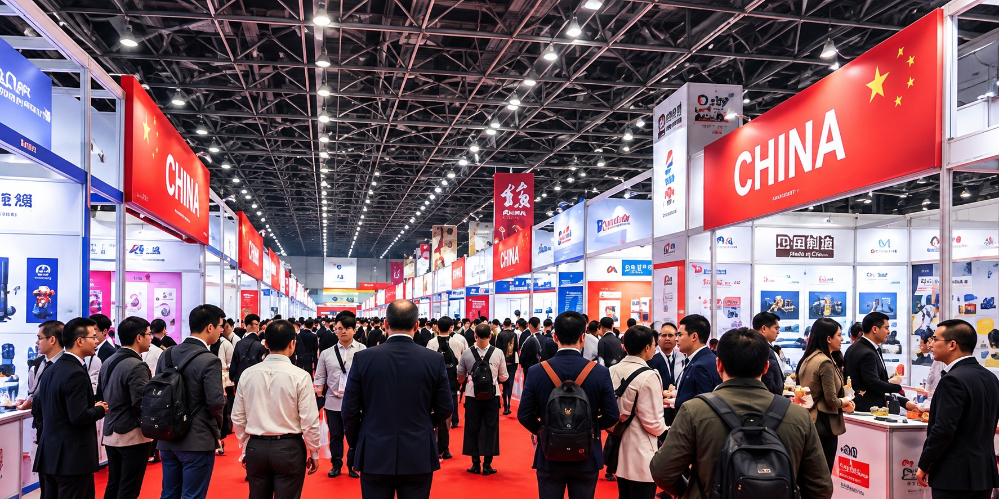
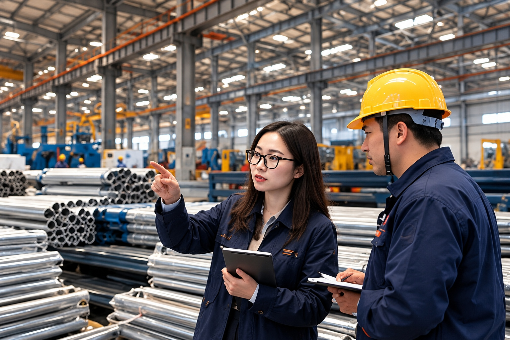
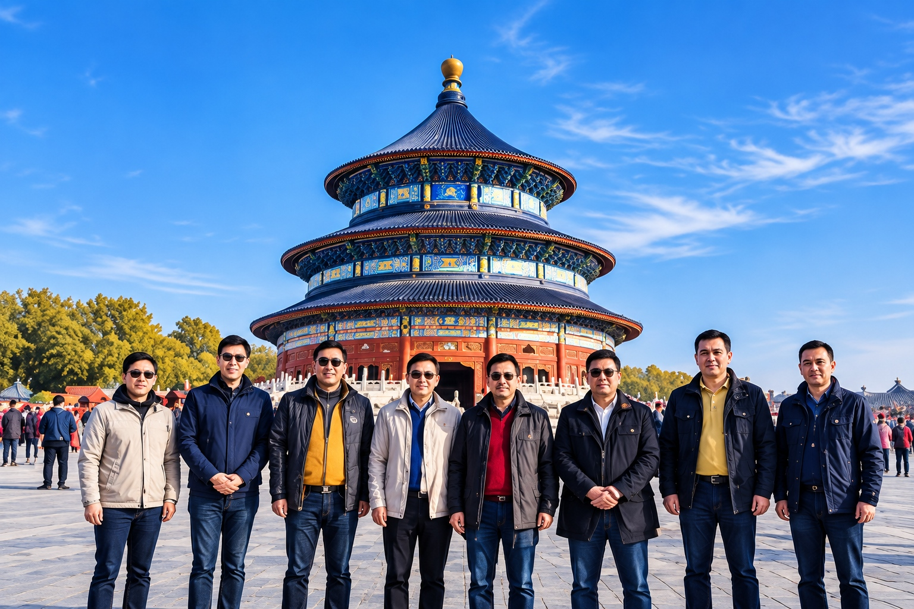
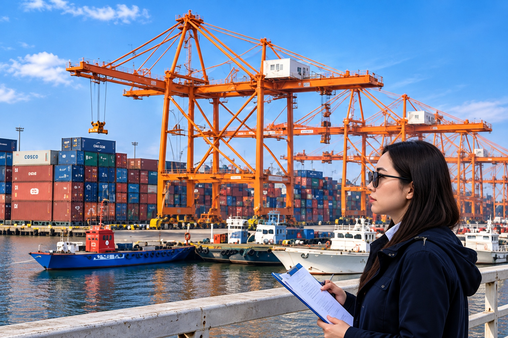
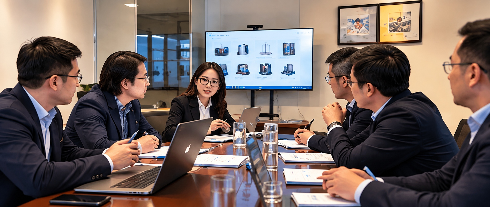
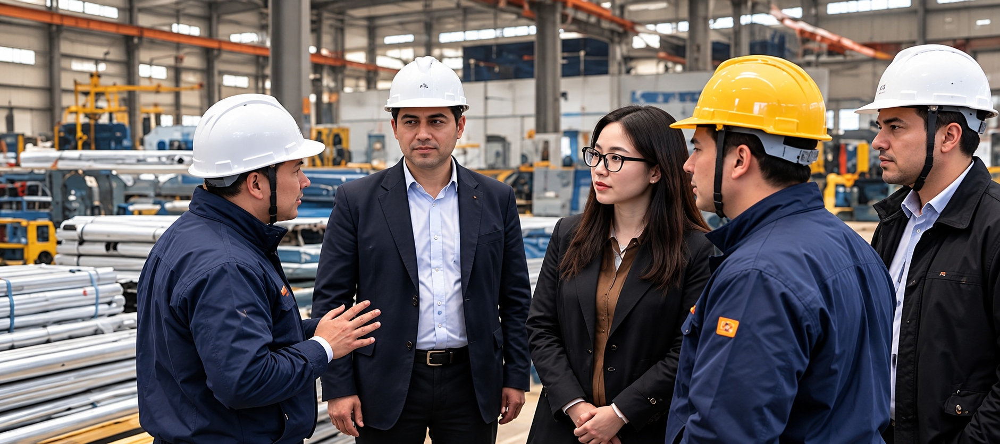

Los Andes es un puente entre empresas, personas y oportunidades entre China y Chile.
Acompañamos a empresas y personas que necesitan moverse entre ambos mercados, facilitando la comunicación, la coordinación y la conexión con las personas adecuadas.
Nuestro trabajo combina conocimiento local, idioma y experiencia en terreno para acompañar cada proyecto según sus necesidades.
Conectamos empresas y generamos oportunidades.
Te ayudamos a encontrar y evaluar proveedores en China.
Organizamos viajes de negocios, ferias y visitas a fábricas.
Apoyo en reuniones, ferias y procesos comerciales.
Actuamos como tu apoyo en terreno en China y en Chile.
No se trata solo de hacer una gestión. Entendemos, conectamos y acompañamos cada proyecto.
Conocemos tu necesidad, objetivos y contexto.
Encontramos las personas, proveedores y oportunidades adecuadas.
Seguimos el proyecto en terreno y te apoyamos en cada etapa.
Desde una feria en China hasta una reunión con un cliente en Chile, estamos presentes donde el proyecto lo necesita.






Hablemos y veamos cómo podemos ayudarte.